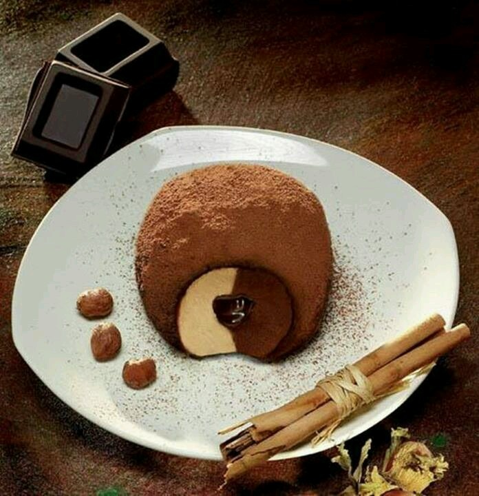

Ricette Dolci
In questa sezione troverai tutte le ricette dolci tipiche delle regioni italiane, adatte ad ogni occasione.
Basilicata -Le Strazzate-
Ingredienti:
Farina per dolci 500g
Cacao 150g
Uova 2
Cannella
Mandorle sgusciate 500g
Bicarbonato
Chiodi di garofano
Preparazione:
Nella preparazione della Strazzata;prendi la farina, e inizia ad aggiungere tutti gli ingredienti necessari, eccetto il bicarbonato, che metterai alla fine.
Mi raccomando: utilizza le mandorle dolci che saranno cotte e sminuzzate in piccole briciole,prima di inserirle nella farina per i dolci.
Utilizza l'acqua tiepida, e fai, man mano, amalgamare per bene l'impasto. Schiacciando la pasta, cerca di fare delle forme cilindriche. In seguito le taglierai per ottenere impasti di forma circolare, tipo piccole panelle.
Ora accendi il forno e attendi che la temperatura salga a circa 180-200 gradi.
Inforna, alla fine,le strazzate crude, e attendi che lievitino in un tempo tra mezz'ora e tre quarti d'ora.

Calabria -Il Tartufo di pizzo-
Ingredienti:
-Latte intero 300 g
-Cioccolato fondente 200 g
-Zucchero 50 g
-Panna fresca liquida 100 g
Per il gelato alla nocciola:
-Latte intero 300 g
-Panna fresca liquida 100 g
-Zucchero 100 g
-Pasta di nocciole 70 g
Per il cuore di ganache:
-Panna fresca liquida 100 g
-Glucosio 10 g
-Cioccolato fondente 100 g
Per decorare:
-Cacao amaro in polvere 100 g
Preparazione:
Per preparare il tartufo gelato iniziate a realizzare il gelato al cioccolato. Tagliate finemente il cioccolato fondente e tenetelo da parte. Versate la panna in un pentolino e portatela a sfiorare il bollore, quindi spostatelo dal fuoco e unite nel pentolino anche il cioccolato e lo zucchero.
Mescolate per amalgamare tutti gli ingredienti e aggiungete anche il latte tiepido, mescolate nuovamente e lasciate raffreddare a temperatura ambiente.
Una volta freddo, versate il composto al cioccolato nella gelatiera e lasciatela girare per 35 minuti, fino ad ottenere un composto piuttosto cremoso. Quindi trasferite il gelato al cioccolato in una pirofila bassa, copritelo con della pellicola trasparente e riponetelo in freezer per almeno 2 ore. Nel frattempo preparate anche il gelato alla nocciola. Versate in una ciotola il latte, la panna, lo zucchero e la pasta di nocciole.
Mescolate il tutto con una frusta fino ad amalgamare gli ingredienti e versate il composto nella gelatiera e lasciatela girare per 30 minuti, fino ad ottenere un composto piuttosto cremoso. Trasferite il gelato alla nocciola in una pirofila bassa, coperto con della pellicola trasparente e riponetelo in freezer per almeno 2 ore.
A questo punto preparate la ganache al cioccolato fondente, che sarà il cuore del vostro tartufo gelato. Tritate grossolanamente il cioccolato fondente, versate la panna in un tegame e portatela a sfiorare il bollore a fuoco dolce. Spegnete il fuoco, unite il cioccolato nella panna calda e aggiungete anche il glucosio. Quindi mescolate il tutto fino ad ottenere un composto uniforme.
Trasferite la ganache al cioccolato in una pirofila e coprite con la pellicola a contatto. Lasciate raffreddare a temperatura ambiente, trasferitela in una sac-à-poche e riponetela in frigorifero a rassodare.
Prendete lo stampo in silicone (da 460 g) e riempite le mezze sfere con una pallina di gelato al cioccolato, livellate aiutandovi con una spatola e riponete in freezer per un’altra ora. Prendete un altro stampo e, sempre aiutandovi con lo spallinatore, riempite le mezze sfere con il gelato alla nocciola.
Livellate la superficie e riponete anche questo in freezer per un’ora. Trascorso questo tempo estraetelo dal freezer e con uno scavino create la cavità e riempitela con la ganache al cioccolato.
Livellate nuovamente e riponete in freezer per un’ora. A questo punto riprendete entrambi gli stampi e posizionateli uno sopra l’altro in modo da far combaciare le mezze sfere di gelato. Lasciate che questi si uniscano facendo una leggera pressione con le mani e riponete in freezer per ancora 1 ora.
Estraete lo stampo dal freezer al momento di servire il vostro tartufo gelato. sformate delicatamente le sfere: fate una leggera pressione sui due stampi contemporaneamente per far uscire ciascun tartufo gelato e passatele nel cacao. Posizionate i tartufi su un piatto da portata e servite